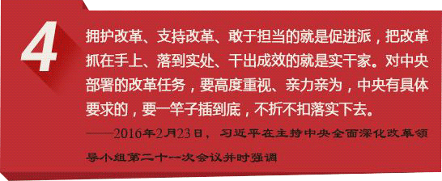

2013年12月30日中共中央全面深化改革领导小组宣布成立。两年来，中央深改领导小组，认真履行“总体设计、统筹协调、整体推进、督促落实”的职责，召开了19次会议，审议了102份改革文件，在经济体制和生态文明体制改革、民主法制领域改革、文化体制改革、社会体制改革、党的建设制度改革、纪律检查体制改革等各个方面，都取得了令人瞩目的成绩。
全面深化改革的总目标是：完善和发展中国特色社会主义制度，推进国家治理体系和治理能力现代化。它不是推进一个领域改革，也不是推进几个领域改革，而是涉及经济、政治、文化、社会、生态文明、国防和军队以及对外开
放等所有领域改革；它不是单靠某一个或某几 个部门，而是需要协调各方。全面深化改革的实现，需要进一步解放思想，紧紧依靠人民，加强和改善党的领导。在“四个全面”战略布局中，全面深化改革是重要动力。全面深化改革的总目标是：完善和发展中国特色社会主义制度，推进国家治理体系和治理能力现代化。它不是推进一个领域改革，也不是推进几个领域改革，而是涉及经济、政治、文化、社会、生态文明、国防和军队以及对外开
放等所有领域改革；它不是单靠某一个或某几 个部门，而是需要协调各方。全面深化改革的实现，需要进一步解放思想，紧紧依靠人民，加强和改善党的领导。在“四个全面”战略布局中，全面深化改革是重要动力。
图解习近平众论全面深化改革
改革是发展的强大动力，是决定当代中国命运的关键一招，党的十八大以来，以习近平同志为核心的党中央推进全面深化改革，改革主体框架已经基本确立。习近平总书记对全面深化改革做出了许多重要言论，下面以十张图来进行学习。
- 
聚焦社会热点问题
户籍改革
加快户籍制度改革是党的十八大和十八届三中全会部署的一项重点改革，是推进中国特色新型城镇化的一项重大任务，是实现亿万农业转移人口市民梦的一项重大举措。这次户籍制度改革与有关领域改革统筹配套，协同推进，涉及的面之广，人员之多，力度之大，都将是前所未有的。 加快户籍制度改革确实是一块硬骨头。我们有信心在党中央、国务院的坚强领导下，紧紧依靠各级党委政府，与各有关部门同心协力、攻坚克难，在实干中破解改革难题、实现改革目标。
虽然商保融入社保体系还有很长的路要走，但“湛江模式”走出了具有示范效应的第一步。这种“统一政策、统一核算、统一管理”的商保社保合作新模式，对完善社会基本医疗保险制度具有重要的借鉴意义。
会关于户籍制度热点解读,全国两会关于户籍制度提案
自改革开放以来，中国的户籍制度改革一直在进行，许多地方进行了积极有效的探索，河北、辽宁等10多个省区市取消了农业户口和非农业户口之分，统一称为居民户口。
但上述地方户籍改革，大都局限于取消形式上的户籍歧视，即户籍登记上体现的城乡不同身份，而实质上的户籍歧视(户籍身份产生的各种差别待遇，如社会福利、医疗保险、基础教育等基本公共服务)并未取消和实现平等。
导致户籍制度改革举步维艰的原因，主要是由于推进公共服务均等化，实现平等的社会福利待遇将给地方政府带来较大的财政压力和管理上的巨大考验。
户籍制度改革，应当从实质入手，莫做表面文章。观察人士指出，通过户籍制度改革，最终实现社会公共资源不分地域、不论身份和职业，为全体公民共同享有，实现权利与责任、权利与义务的真正对等，这是户籍制度改革的题中之意。
户籍改革继续深入：划“红线”、拒“水分”、能落就落
截止去年九月，城乡统一的户口登记制度已全面建立。各地取消了农业户口与非农业户口性质区分，“城里人”和“乡下人”户口身份之别成为了历史。
与之相配套的户口迁移政策也进一步完善。各地普遍降低了农业转移人口和其他常住人口在城镇落户门槛，超大城市、特大城市积极建立完善积分落户制度。
随之，农业转移人口市民化面临的制度性难题被逐步破解。去年十月底，“人地钱”挂钩机制初步建立，农村“三权”改革稳步推进，教育、社会保障、住房等重点领域配套改革取得实质性进展，居住证制度加快落地。
在一系列政策的推动下，户籍制度改革基础进一步夯实。各地深入开展户口登记管理清理整顿，积极推进居民身份证异地受理等“三项制度”建设，扎实推动解决无户口人员登记户口问题。